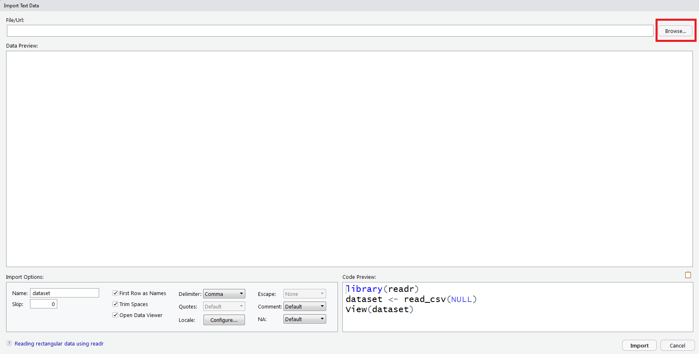
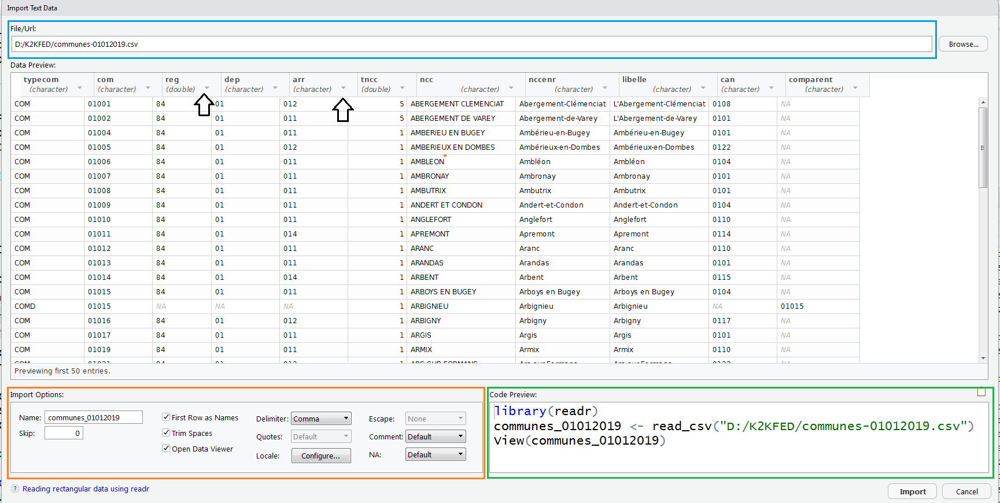

11 Importer des fichiers plats (.csv, .tsv, .txt)
11.1 Tâches concernées et recommandations
L’utilisateur souhaite importer dans R des données stockées sous forme de fichiers plats (formats .txt, .csv, .tsv).
- Pour importer des données de taille réduite (jusqu’à 1 Go), il est recommandé d’utiliser la fonction
read_delim()du packagereadr; - Pour importer des données de taille plus importante (supérieure à 1 Go), il est recommandé d’utiliser la fonction
fread()du packagedata.table. -
L’usage du package
csvreadest déconseillé, de même que l’utilisation des fonctions natives deRread.csv()etread.delim().
11.2 Importer un fichier avec le package readr
Le package readr propose plusieurs fonctions adaptées pour importer des fichiers plats. Parmi elles, la fonction read_delim() permet de lire les fichiers csv et cela quelque soit le délimiteur (virgule ou point-virgule) et le marqueur décimal (point ou virgule).
Il faut charger le package readr pour utiliser cette fonction :
Si vous êtes complètement débutants en R, il est recommandé d’utiliser l’utilitaire d’importation de RStudio. Une fois que les données sont correctement importées, vous pourrez copier-coller le code dans votre script R et vous familiariser avec les fonctions du package readr.
11.2.1 Utiliser l’assistant d’importation RStudio
Pour les utilisateurs débutants, RStudio propose une interface graphique très commode pour importer des fichiers plats avec readr. On y accède avec : File > Import Dataset > From text (readr).... On obtient la fenêtre suivante. En cliquant sur Browse (rectangle rouge), on peut définir le chemin du fichier que l’on souhaite importer.

Une fois que le fichier à importer a été sélectionné, un aperçu des premières lignes du fichier s’affiche dans la fenêtre. Dans l’exemple ci-dessous, on essaie d’importer le fichier des communes du Code Officiel Géographique (version 2019). La fenêtre comprend deux panneaux très utiles :
- Un panneau qui permet de définir les options d’importation (rectangle orange) ;
- Un panneau qui donne le code qui réalise l’importation demandée (rectangle vert).

Les principales options d’importation comprennent notamment :
-
Name: Le nom dudata.framedans lequel les donnée seront stockées ; -
First Row as Names: à cocher si la première ligne contient les noms de colonnes ; -
Delimiter: Indique le délimiteur des données. Pour mémoire :Comma= virgule,Semicolon= point virgule,Tab= tabulation,Whitespace= espace,Other...= autre (à définir) ; -
Locale...: définit les options locales d’importation, notamment l’encodage et le marqueur décimal qui sont des sources récurrentes de problèmes ; -
NA: indique la valeur retenue lorsqu’une valeur est manquante.
Enfin, il est possible de modifier le type des données en cliquant sur la petite flèches à côté de l’en-tête de colonne (flèches noires).
11.2.2 Utiliser la fonction read_delim()
La fonction read_delim() est faite pour lire toutes sortes de fichiers plats, et propose de nombreuses options pour l’adapter au fichier considéré.
Voici les principales options de read_delim() :
| Argument | Valeur par défaut | Fonction |
|---|---|---|
file |
Aucune | Le chemin du fichier à importer |
delim |
Aucune | Le délimiteur du fichier plat |
escape_backslash |
FALSE |
Les caractères spéciaux du fichier plat ont-ils un échappement (\) |
col_names |
TRUE |
La première ligne contient-elle les noms de colonne ? |
col_types |
NULL |
Définir le type des variables |
col_select |
NULL |
Choisir les variables à importer |
skip |
0 |
Sauter les n premières lignes (0 par défaut) |
n_max |
Inf |
Nombre maximum de lignes à importer (pas de limite par défaut) |
locale |
Réglages locaux (encodage, marqueur décimal…) |
Quelques remarques sur les options de read_delim() :
-
read_delim()essaie par défaut de deviner le type des colonnes (integer pour les nombres entiers, character pour les chaînes de caractères…). L’optioncol_typespermet de choisir le type des colonnes, et doit être égale à un vecteur dont chaque élément est de la formenom_variable = [type de colonne]. Les types de colonnes disponibles sontcol_integer(),col_logical(),col_double(),col_character()(voir?colspour la liste complète). Exemple : si on importe une variable comme nombre entier et une variable comme caractère, on écrit :col_types = cols(var1 = col_integer(), var2 = col_character()).
Exemple : on veut importer le fichier des communes du code officiel géographique (version 2019, disponible ici), en déclarant que le fichier est encodé en UTF-8 et en imposant que le code commune (com) soit lu comme une chaîne de caractères et le code région (reg) comme un nombre entier. On écrit le code suivant :
# Dans cet exemple, il faut remplacer "mon_IDEP" par votre IDEP
library(readr)
communes <- read_delim("Z:/mon_IDEP/communes-01012019.csv",
locale = locale(encoding ="UTF-8"),
col_types = cols(com = col_character(),
reg = col_integer())
)
names(communes)La fonction read_delim() contient également l’option lazy qui lorsque elle est fixée à TRUE permet d’améliorer la vitesse de traitement d’un fichier csv. Cette idée de “lecture paresseuse”, explorée pour la première fois dans le paquet vroom, consiste à optimiser la quantité du fichier total auquel un utilisateur a besoin d’accéder en fonction de sa requête. Ce billet de blog de RStudio illustre ce concept.
Pour en savoir plus sur read_delim(), il suffit de consulter l’aide avec ?read_delim.
11.3 Importer un fichier avec le package data.table
Le package data.table permet d’importer des fichiers plats avec la fonction fread(). Cette fonction présente trois avantages :
- Elle est très rapide pour importer de gros volumes de données (et nettement plus rapide que les fonctions du package
readr). Voir ici ; - Elle permet de sélectionner facilement les colonnes qu’on veut importer (option
select) ; - Elle propose un grand nombre d’options, adaptées pour les usages avancés.
Pour utiliser fread(), il faut charger le package data.table :
Les principales options de fread() sont les suivantes :
| Argument | Valeur par défaut | Fonction |
|---|---|---|
file |
Aucune | Le chemin du fichier à importer |
sep |
Le caractère le plus fréquent parmi ,\t |;:
|
Le délimiteur du fichier |
header |
fread() essaie de deviner |
La première ligne contient-elle les noms de colonnes ? |
nrows |
Inf |
Nombre maximum de lignes à importer (pas de limite par défaut) |
skip |
0 |
Sauter les n premières lignes (0 par défaut) |
stringsAsFactors |
FALSE |
Les chaînes de caractères sont-elles traitées comme des facteurs ? |
select |
NULL |
Sélectionner les colonnes à importer |
drop |
NULL |
Sélectionner les colonnes à ne pas importer |
colClasses |
fread() essaie de deviner |
Définir le type des variables |
encoding |
"unknown" |
Définir l’encodage du fichier ("UTF-8" ou "Latin-1") |
dec |
Le point | Définir le marqueur décimal |
data.table |
TRUE |
fread renvoie un data.table si TRUE, un data.frame si FALSE
|
showProgress |
TRUE |
Indiquer la progression de l’importation |
Quelques remarques sur les options de fread() :
-
fread()importe par défaut toutes les colonnes- L’option
selectpermet de sélectionner les colonnes, et doit être égale à un vecteur de noms. Exemple :select = c("var1", "var2", "var4"); - Inversement, l’option
droppermet de préciser quelles colonnes ne seront pas importées. Les optionsselectetdropne peuvent pas être utilisées en même temps.
- L’option
fread()essaie par défaut de deviner le type des colonnes (integer pour les nombres entiers, character pour les chaînes de caractères…). L’optioncolClassespermet de choisir le type des colonnes, et doit égale à un vecteur dont chaque élément est de la formenom_variable = "type". Exemple :colClasses = c(var1 = "character", var2 = "logical", var4 = "double");l’option
stringsAsFactors = TRUEpeut ralentir sensiblement l’importation des données ; il faut l’utiliser avec circonspection.
Exemple 1 : on veut à nouveau importer le fichier des communes du code officiel géographique, en déclarant que le fichier est encodé en UTF-8 et en imposant que le code commune (com) soit lu comme une chaîne de caractères et le code région (reg) comme un nombre entier. On écrit le code suivant :
Exemple 2 : on veut réaliser la même importation que précédemment, mais en sélectionnant uniquement le code commune (com), le nom de la commune (libelle) et la région (reg). On écrit le code suivant :
11.4 Comparaison de performances sur grands fichiers
Afin de comparer la rapidité de la fonction read_delim() du package readr avec la fonction fread() de data.table, on utilise dans cette partie le fichier des prénoms de l’Insee. Celui-ci contient les données sur les prénoms attribués aux enfants nés en France entre 1900 et 2021 par département de naissance.
Ce fichier de 78 Mo contient près de 3,8 millions de lignes et 5 variables.
Le code suivant utilise le package microbenchmark qui fournit des fonctions pour mesurer et comparer avec précision le temps d’exécution d’instructions R. Pour en savoir plus, consulter cette page.
Une comparaison est même réalisée avec la fonction read_delim_arrow du package arrow qui permet également d’importer des fichiers csv avec le lecteur CSV Arrow C++. Pour en savoir plus, consultez ce site.
# Dans cet exemple, il faut remplacer "mon_IDEP" par votre IDEP
library(readr)
library(data.table)
library(arrow)
library(microbenchmark)
chemin_fichier <- "Z:/mon_IDEP/dpt2021.csv"
mbm <- microbenchmark("readr" = {
base <-
read_delim(
file = chemin_fichier
)
},
"readr_lazy" = {
base <-
read_delim(
file = chemin_fichier,
lazy = TRUE
)
},
"arrow" = {
base <-
read_delim_arrow(
file = chemin_fichier,
delim = ";"
)
},
"data.table" = {
base <-
fread(
file = chemin_fichier
)
})Lorsqu’on affiche le résultat, on se rend compte que la fonction fread() est la plus rapide. À l’opposé, read_delim() est la moins performante même si l’ajout de l’option lazy=TRUE permet de diviser le temps d’exécution par près de 3. Enfin, la fonction read_delim_arrow() du package arrow se rapproche fortement de la rapidité de fread().
> mbm
Unit: milliseconds
expr min lq mean median uq max neval
readr 1546.9 1630.7 1673.4 1659.1 1685.0 1921.7 20
readr_lazy 567.8 591.7 619.8 602.7 639.9 793.7 20
arrow 428.1 456.1 478.6 476.5 496.0 573.6 20
data.table 284.9 300.5 326.9 311.3 326.4 480.9 2011.5 Quelques bonnes pratiques
Voici quelques bonnes pratiques à avoir en tête pour importer des données :
-
Vérifier que votre machine peut charger les données :
Rimporte les données dans la mémoire vive de la machine. Si les fichiers que vous voulez importer sont d’une taille supérieure à celle de la mémoire vive, vous ne pourrez pas les importer intégralement. -
Tester votre code d’importation avec quelques lignes : il faut souvent tâtonner pour bien importer des données. Il est donc recommandé de commencer par importer quelques centaines ou quelques milliers de lignes (en utilisant l’option
n_maxdes fonctions du packagereadrounrowsdefread()) pour vérifier que le code est correct. - Il est important d’importer un nombre réduit de colonnes. Bien sélectionner les colonnes permet souvent de réduire significativement la taille des données et de résoudre le problème mentionné au point précédent. Pour cela, il s’agit d’utiliser l’option
col_selectpour la fonctionread_delim()du packagereadrou l’optionselectde la fonctionfread()dedata.table. -
Vous pouvez choisir le package que vous utilisez en fonction des outils que vous voulez utiliser pour manipuler les données : les fonction
read_delim()dereadrrenvoit un objettibbletandis quefread()renvoie un objetdata.table. Si vous prévoyez d’utiliser des packages du tidyverse (notammenttidyretdplyr), il est préférable d’utiliserreadr. Si vous prévoyez d’utiliserdata.table, il est préférable d’utiliserfread().
11.6 Pour en savoir plus
-
Sur
readr:- la documentation du package (en anglais) ;
- une introduction à
readr(en anglais) ; - l’aide-mémoire du package ;
-
sur
data.table:- la documentation du package (en anglais).